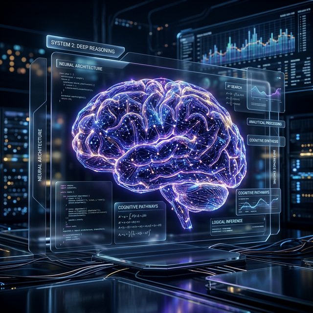

DEEP_REASONING
"System 2" Reasoning in LLMs: Beyond Pattern Matching
Exploring how chain-of-thought processing and internal deliberation are transforming modern language models into true reasoning engines...
READ_TRANSCRIPT